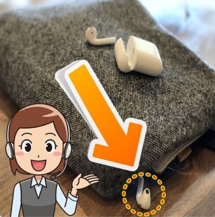

전자기기 >
핸드폰
에어팟 위치 찾기!!
1. 에어팟 위치추적 하기
에어팟은 완전한 무선으로, 걸어둘 선조차 없을 뿐만 아니라
크기도 작아 분실 위험이 적지 않습니다.
때문에 많은 사람들이 에어팟 마지막 위치를 찾아 소마 쿠션을 이리저리 뒤지는 일이 많은데,
에어팟 위치추적 앱을 사용하면 이런 걱정도 끝!!
애플은 나의 아이폰 찾기 앱 안에 나의 에어팟 찾기를 넣어 에어팟을 페어링하면,
나의 아이폰 찾기 앱이 자동으로 에어팟의 위치를 추적하도록 기능을 마련해 두고 있습니다.
에어팟 위치추적은 에어팟 마지막 위치를 찾아주는게 주목적으로, 최신 기기 사용에 어려움을 겪는 이들도 손쉽게 따라 할 수 있습니다.

1. 에어팟 위치추적 방법
AirPods, 에어팟을 찾는데 도움이 필요하십니까? 나의 아이폰 찾기 앱을 사용하면 지도에서 AirPods(에어팟)의 위치를 확인하고 사운드를 재생, AirPods을 찾아
다시
무선으로 소리를 들을 수 있습니다.
나의 기기 찾기는 분실한 AirPods을 찾는데 도움을 주기 위해 만들어진 기능으로, 에어팟을 사용하고 있는 아이폰 또는 아이패드에서 이미 나의 [기기] 찾기를 설정한 경우
에어팟에 대해서도 나의 기기 찾기가 자동으로 활성화 됩니다. 때문에 에어팟을 분실했거나, 에어팟이 케이스 외부 또는 가까운 어딘가에 있는 경우라면 나의 찾기 기능 사용은
필수!!
추천하기
비추하기
신고하기
유튜브
페이스북
트위터
카카오톡
인스타
댓글 3
잡스비네이터
2019-02-04 13:21:23잡스비네이터
2019-02-04 13:21:23잡스비네이터
2019-02-04 13:21:23